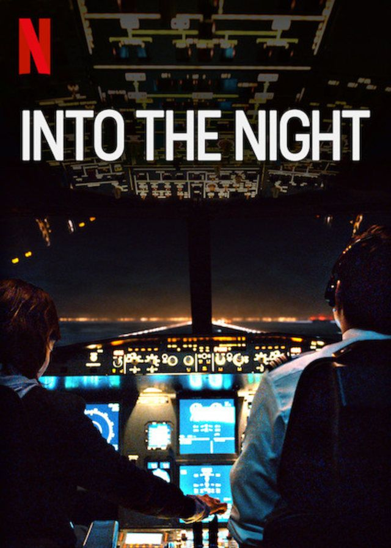

Merhaba, Ben Sevgi Doğan İstanbul Aydın Üniversitesinde 2. Sınıf Bilgisayar Programcılığı(İngilizce) öğrencisiyim.Aktif olarak fitness yapıyorum,kitap okumayı,film ve dizi izlemeyi, ve kendimi geliştirecek olan eğitimlere katılıyorum. Patika dev kurslarını sosyal medya üzerinden duydum ve girip baktığım zaman o kadar güzel ve çeşitli eğitimler olduğunu görünce sevindim özellikle ücretsiz olması da biz öğrenciler açısından çok avantajlı
Genel olarak yabancı diziler izlemeyi tercih ediyorum

Güneşin insanlar için tehlike oluşturmasının ardından karanlıkta kalmak için batıya gitmeye çalışan bir adamın hikayesini konu ediyor. Yaşanan kozmik bir olay, dünya için büyük bir tehlike oluşturur. Güneş, yoluna çıkar herkesi öldürmeye başlar. Bunun üzerine bir adam, gün doğmadan önce karanlığın hüküm sürdüğü bölgelere gitmeye karar verir. Brüksel’den kalkan bir gece uçağını kaçıran adam, güvenli olan karanlıkta devamlı kalmak için pilotları batıya uçmak için yönlendirir.